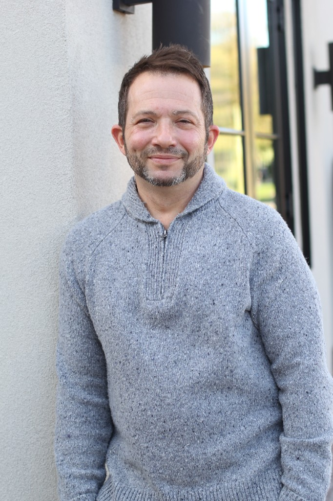
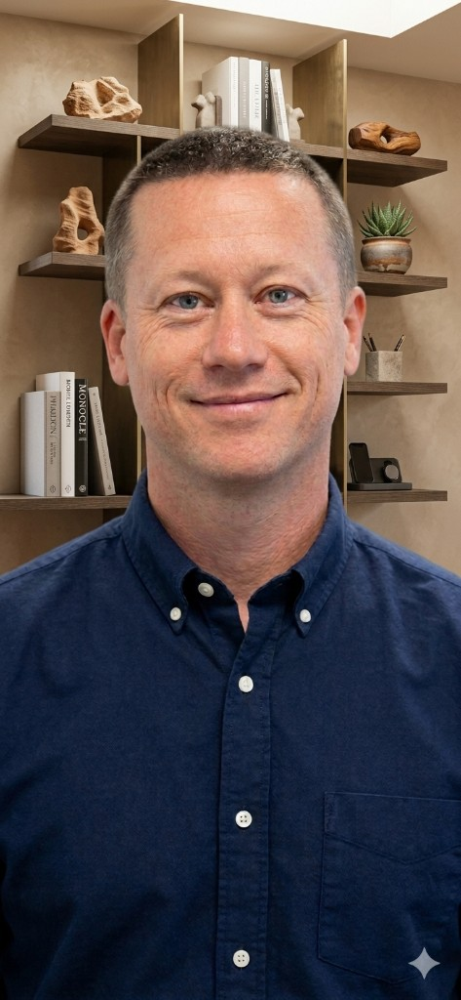
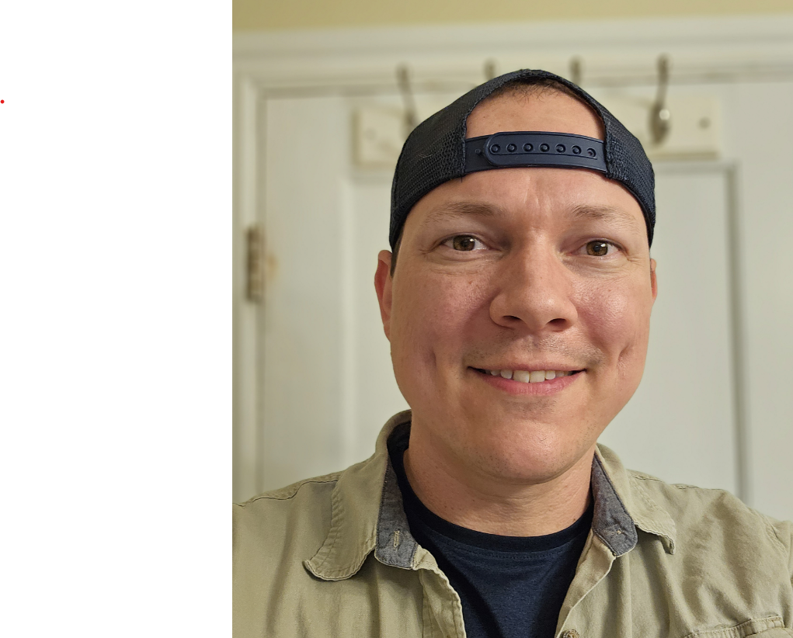
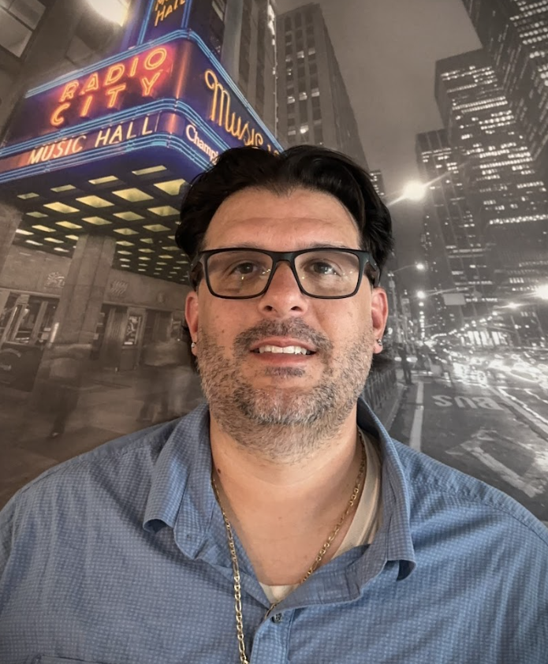

Reach out
How can we help you?
Schedule a meeting, or reach us by email or phone.
Call 480-716-5884 Email us Frequently Asked Questions
View Google Business profile Leave a review
No email app opened? Please email us at hello@craydl.com from your regular inbox or webmail.
hello@craydl.com
On average, homeowners and developers will make over 100 changes to a digital project. Change that otherwise would not surface until you are in the field. It doesn’t need to be that way.
Our team of industry experts, technologists and collaborators is transforming the luxury residential building and remodeling process with specialized and precise pre-construction planning and program management. We bring together talented builders, designers, architects, and engineers to provide homeowners a simple, straightforward experience, while our clash-detection process supports you from ideation to visualization. We make complex decision-making simple by looking ahead with visualization tools and technology.
About us
Stop rework before it starts
Welcome to CRAYDL. We help you plan and build custom homes with confidence.
Based in Scottsdale, AZ, CRAYDL supports luxury home builders, architects, interior designers, and developers in high-end, affluent residential markets in Arizona and throughout the United States.
About you
Who we help
CRAYDL is an architectural design and risk mitigation studio, threaded with technology designed to align expectations, catch mistakes and provide tools that reduce rework and unexpected surprises on the construction site. We align architects, builders, designers, and homeowners around a build-ready model so issues surface before they reach the jobsite.
Builders
Control the preconstruction process and prevent conflicts with the accurate information provided in a digital twin.
Learn moreHomeowners
Make confident and informed decisions about your dream home by seeing your design come to life virtually before it's built!
Learn moreDevelopers
Enhance collaboration, accuracy, and efficiency with a single model of all of your architecture, design, and construction information.
Learn moreInterior Designers
Free yourself to design more while enhancing your customer experience with automated document production and scheduling.
Learn moreArchitects
Mitigate risk, streamline sheet production, and improve customer satisfaction with an accurate simulated build.
Learn more
Preconstruction
Services and software
Work with us
What we do
CRAYDL's detailed and intelligent 3D models integrate all aspects of a building's lifecycle, including accurate As-Builts, BIM Drafting, BIM Management, and 3D Visualizations to enable efficient collaboration, improved accuracy, and streamlined management of your home-building project.
Building Information Modeling
CRAYDL's detailed and intelligent 3D models integrate all aspects of a building's lifecycle, including accurate As-Builts, BIM Drafting, BIM Management, and 3D Visualizations to enable efficient collaboration, improved accuracy, and streamlined management of your home-building project.
Program Management
Transform real-world structures into accurate digital models with Scan to BIM technology. Enhance your architectural and construction projects by seamlessly converting 3D laser scans into detailed Building Information Models (BIM) for precise planning, analysis, and execution.
Virtual Design Construction
Enhance your projects with interior design integration to BIM. Seamlessly incorporate detailed interior layouts, furnishings, and finishes into your Building Information Models, ensuring cohesive design, improved collaboration, and precise execution of every detail.
Reach out
Get on the list!
Subscribe to our industry-specific blog for information and education about architecture, engineering, construction, and supply chain management. Gain insider access to our thoughts, ideas, and perspective on residential construction program management.
CRAYDL
About Us
Leadership team
-

Adam Katz
Founder & President
Bio
Hi, I’m Adam Katz — A builder and designer at the intersection of technology and capital.
With a career that spans from the fast-paced world of Capital Markets to the technical intricacies of design and building, I bring a unique perspective to every project. I specialize in leveraging technology to streamline the way we conceive and create physical spaces, ensuring that high-level strategy always aligns with ground-level execution.
Driven by Discipline
My professional approach is rooted in the discipline I honed as a former college hockey player. On the ice, success is built on teamwork, grit, and split-second decision-making—principles I carry into the boardroom and onto the job site. Whether I’m navigating complex financial structures or implementing new design technologies, I thrive in environments that require focus and a competitive edge.
Building for the Future
My experience in building and design isn’t just about aesthetics; it’s about understanding the “how” behind the “what.” By integrating my background in technology, I help bridge the gap between traditional construction and modern, data-driven design, making the building process more efficient, transparent, and scalable.
Grounded in What Matters
Beyond the work, I am a husband and father. These roles are my primary drivers—they reinforce my commitment to building things that last and maintaining a standard of integrity in everything I do. I understand that behind every project is a person, a family, or a community, and I work to ensure our results reflect that responsibility.
Areas of Expertise
- Design & Technology: Integrating digital tools to modernize the building lifecycle.
- Capital Markets: Navigating the financial complexities of development and growth.
- Strategic Execution: Bringing a “teammate-first” mentality to complex project management.
I’m always looking to connect with others who are pushing the boundaries of design and construction.
-

Phil Orstrom
VP of Operations
Bio
Hi, I’m Phil Orstrom — A seasoned homebuilding professional, independent builder, and community advocate based in Tempe, Arizona.
With over two decades of experience in the Arizona residential market, I have dedicated my career to the art and science of homebuilding. My journey has taken me from managing high-volume operations for some of the region’s most respected developers to the hands-on precision of independent building.
A Foundation of Expertise
My professional background is built on a “best-of-both-worlds” experience. During my tenures at Maracay Homes and Starion Companies, I honed my skills in large-scale project management, land development, and operational excellence. These roles taught me the complexities of the Arizona market and the importance of rigorous standards.
Today, as an independent builder, I apply those institutional-grade insights to a more personal scale. I believe that every home is a sanctuary, and I take pride in bridging the gap between sophisticated design and practical, high-quality construction.
Education & Continuous Growth
My approach is backed by a solid academic foundation from Arizona State University, where I earned my degree in Housing and Urban Development. This education provided the technical framework for my career, allowing me to understand not just how a house is built, but how communities are formed and sustained.
Driven by Community & Family
While I am passionate about building structures, my greatest pride is in building a life here in Tempe. I am a devoted husband and father of two, and my family is the primary driver behind everything I do.
I believe in giving back to the community that has given me so much. My volunteer work is an essential part of my identity, reflecting my commitment to local initiatives and ensuring that our neighborhoods remain vibrant places for the next generation to grow.
What I Bring to the Table
- Deep Local Knowledge: Decades of experience specifically within the Arizona building landscape.
- Corporate Rigor, Boutique Service: The process-driven mindset of a major developer paired with the agility of an independent builder.
- Integrity & Transparency: A commitment to clear communication and doing right by the client and the community.
I am always looking to connect with fellow professionals and neighbors who are passionate about the future of building in Arizona.
-
Kara Jean-Baptiste
Director of Project Delivery
Bio
Hi, I’m Kara Jean-Baptiste — Director of Project Delivery at CRAYDL and your partner in turning vision into reality.
I am a results-driven professional with a deep-seated passion for the intersection of process and design. At CRAYDL, I lead Customer Success and Project Delivery, a role where my enthusiasm for excellence meets the practical complexities of architectural execution.
Bridging the Gap
I believe that a plan is only as good as its final product. My focus is on bridging the gaps between initial designs and the completed build, ensuring that nothing is “lost in translation.” I thrive on orchestrating the complexities of a project—finding the harmony between the creative vision of the architect and the technical requirements of the builder.
Excellence Without Compromise
I joined CRAYDL because of a shared commitment to delivering high-level results without cutting corners. In my world, “good enough” isn’t an option. Whether I am identifying the critical path for a project or streamlining a communication workflow, my goal is to maximize efficiency and effectiveness so our clients can move forward with total confidence.
The “Multitude of Hats” Expert
Throughout my career, I have excelled at wearing a variety of hats and juggling a multitude of activities simultaneously. This versatility allows me to see a project from every angle. I am an organized, exemplary leader who stays focused on the finish line, no matter how many moving parts are in play.
Why I Do What I Do
- Passion for Process: I find beauty in a well-oiled machine and a perfectly executed timeline.
- Customer-Centric Leadership: Your success is the metric by which I measure my own.
- Problem-Solver: I don’t just identify roadblocks; I build the path around them.
I am excited to help you navigate your next project and ensure a delivery that exceeds expectations.
I’d love to connect—let’s talk about how we can bring your next project to life!
-

Shay Spear
Director of Visualization
Bio
Precision Meets Production
With a background as a professional chef, I bring that same precision, timing, and attention to detail to every render and animation. In a kitchen, a few seconds or a fraction of an inch can change the outcome; I apply that same standard of rigor to my digital models and animations.
A Partnership Perspective
As a small business owner, husband and father, I understand what it means to care deeply about your family and your work—and how hard it can be to find someone who shares that commitment. I don’t just provide a service; I treat your project with the same level of ownership you do.
-

Vinny Ciliberti
VP of BIM & VDC
Bio
Hi, I’m Vinny Ciliberti — Vice President of BIM & VDC at CRAYDL.
I lead the application of Building Information Modeling (BIM) and Virtual Design and Construction (VDC) to bring a new level of accuracy, coordination, and clarity to custom residential projects. My mission is simple: translate complex design data into actionable information that empowers teams in both the studio and the field.
A Systems-Oriented Mindset
With a background that bridges architecture, mathematics, and education, I approach every project with a systems-oriented lens. Originally from Long Island, New York, my early career as a math teacher and coach shaped the way I work today. I don’t just build models; I build understanding. I believe that spatial logic and visual communication are the keys to integrating design intent with real-world constructability.
Calm Leadership & Continuous Learning
The transition from the classroom to the construction site taught me the value of a calm, steady hand. Whether I’m navigating model development or streamlining drawing production, I emphasize a culture of continuous learning and precision. I aim to remove the guesswork from the building process, ensuring that every decision is backed by data and every team member is aligned.
The Team-First Spirit
Outside of the office, I’m a dedicated “sports guy.” My loyalty as a New York Jets fan is a testament to my commitment—I’m in it for the long haul. I bring that same passion and “team-first” spirit to CRAYDL, coaching project teams toward smarter, more efficient, and more successful building outcomes.
My Core Expertise
- BIM/VDC Leadership: Maximizing accuracy through advanced modeling and data integration.
- Constructability: Bridging the gap between high-level architectural concepts and field execution.
- Collaborative Coaching: Applying a teacher’s patience to complex project management.
I’m passionate about the future of residential construction and the role technology plays in making it better.
Let’s connect and talk about how we can optimize your next project!